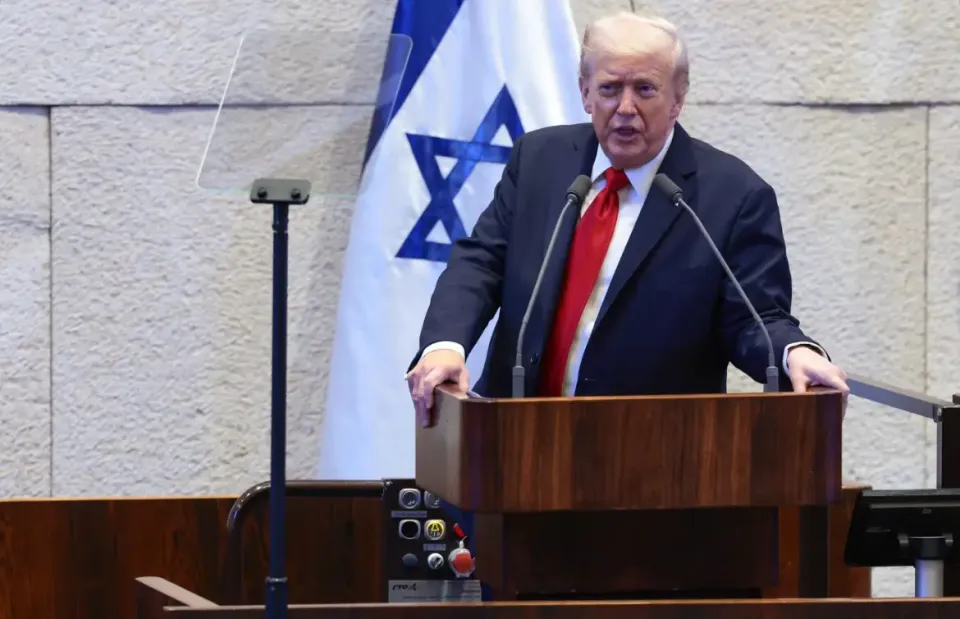

世界苦茶10月14日新闻 | 39条 | 中国9月外贸快速增长

中国9月外贸快速增长 | 荷兰因为技术也欢迎接管中企子公司 | 日本新生儿3%是外国人 | 美参议院邀台参加环太军演并军援10亿美元
苦茶数据
美元兑人民币：7.14（昨日7.13，前日7.14）
美元兑日元：151.84（昨日152.46，前日152.75）
上证指数：3865（昨日3889，前日3897）
标普500指数：6654（昨日6633，前日6552）
比特币：111985（昨日114409，前日112279）
布伦特原油：62.76（昨日63.66，前日62.73）
中国新闻
• 习近平：拓宽妇女参政议政渠道 广泛参与国家社会治理。
中国国家主席习近平星期一呼吁支持妇女深度参与全球治理，拓宽妇女参政议政渠道，使性别平等“真正内化”为全社会的文明共识和行为准则。他并宣布，未来五年中国将再向联合国妇女署捐款1000万美元。新华社报道，习近平星期一和夫人彭丽媛在北京出席全球妇女峰会。习近平发表主旨讲话时说，当前妇女全面发展仍然面临复杂挑战，实现男女平等任重道远。他提出四点建议，包括完善制度和法律，让更多优质的健康和教育资源惠及所有妇女，努力让妇女更全面公平地享有各项权利。习近平表示，支持联合国发挥核心作用，更多关注发展中国家妇女需求。习近平也宣布，提供1亿美元全球发展和南南合作基金额度。
• 中国在北京全球峰会上承诺拨款1.1亿美元支持妇女赋权。
中国国家主席习近平承诺出资1.1亿美元支持妇女赋权，同时北京主办全球峰会 习近平在承诺向联合国妇女署捐赠1000万美元并向中国牵头的基金捐赠1亿美元时强调，这是全球共同的责任。1995年那次会议，189个国家一致通过了《北京宣言和行动纲领》，被广泛视为推动性别平等的全球转折点。习近平在周一的主旨演讲中呼吁营造“包容和谐的社会环境，使妇女免受歧视和偏见”。他指出，妇女的全面发展仍面临“复杂挑战”，是全世界共同的责任，并承诺在未来五年内向联合国妇女署捐赠1000万美元。另有1亿美元将用于全球发展与南南合作基金，与国际组织合作促进妇女和女孩的发展。
• 解放军喉舌称，中国军队通过“深度融合”将弥补短板。
《解放军报》呼吁“深度融合”以弥补联合作战短板 《解放军报》周一在一篇评论中指出，我军尚未在“装备、战场、人员与训练条件”方面实现“深度融合”，这导致联合作战存在不足。为克服这些短板，各级指挥员应“系统性加强军种编成、武器装备、阵地设施、指挥通讯、综合保障以及规章制度”的协调发展，文章写道。文章称，军事技术的快速发展和“战争形态的加速转变”使得网络信息系统在现代冲突中比以往任何时候都更为关键。署名李建华，但未交代其军籍。文章指出，现代战争构成“体系间的较量”，“作战行动如今更需强调联合作战能力，协同与整体融合”。
• 日本著名化学家中村荣一加盟中国南开大学。
日本著名化学家中村荣一出任中国南开大学讲座教授 这位电子显微学先驱在50年的职业生涯中获得了日本的最高荣誉之一及多项科学殊荣。中村荣一是日本最杰出的化学家之一，已被任命为中国南开大学的讲座教授。在他长达50年的科研生涯中，中村获得了诸多科学奖项以及日本的顶级荣誉。作为东京大学教授，他的研究涵盖合成化学与物理化学，重点研究有机和无机物质的功能。他率先将原子分辨率透射电子显微镜用于研究单个分子的运动和反应。利用被称为Smart-EM的技术，中村在有机合成领域确立了世界领先地位，而有机合成已发展为化学最重要的分支之一。有机化学的研究范围已远超植物与动物，拓展到所有含碳物质。
• 《人民日报》詹姆斯“署名文章”：NBA面临的政治雷区。
上月，中共党报《人民日报》刊发了一篇看似罕见的外国人署名评论文章，作者是篮球明星勒布朗·詹姆斯。文中他盛赞篮球是国家间的文化桥梁。但问题在于：詹姆斯从未写过这篇文章。NBA总裁萧华认为这种做法越过了底线。他在首次就此事发声时向《纽约时报》表示：“截取他人言论，将其包装成第一人称评论文章，这种做法并不恰当。” 在美国，公众误以为这是詹姆斯主动撰写的评论文章，随即引发强烈反弹。保守派评论人士指责詹姆斯任由中国政府利用其名气，为威权政府形象“洗白”；一个网站称NBA“向共产党卑躬屈膝”。
印太新闻
• 台防长：11月交付首艘自制潜舰具挑战。
台湾首艘自制潜艇“海鲲号”原定9月完成的海上测试已确定跳票。台湾国防部长顾立雄坦言，11月要交付潜艇有很大挑战。综合台湾公视新闻网、《联合报》和ETtoday新闻云报道，台湾立法院外交国防委员会星期一召开潜舰专案进度报告会议，但全程采用秘密会议形式进行。顾立雄会前接受媒体采访时证实，海鲲号仍在进行海测前的装备调校与测试。虽然他强调对潜舰最后建造完成“有信心”，但也坦言要在11月完成确实是很大的挑战。顾立雄说，完成专案进度报告之后，会请海军就可以公开的部分作完整说明。海鲲号7月初已进行第三次浮航测试，原定9月底完成海测，11月底交付海军。顾立雄9月30日在立法院受访时已承认。
• 美参院通过国防法案 邀台参加环太军演并军援10亿美元。
美国参议院上周通过年度国防授权法案。据台湾媒体报道，法案建议美国邀请台湾参与环太平洋军事演习，并保留了军援台湾10亿美元的相关条款。综合台湾《自由时报》和ETtoday新闻云报道，美国参议院当地时间上星期四深夜以77票对20票通过2026财年的国防授权法案，金额高达9250亿美元。法案纳入“台湾安全合作倡议”，不仅保留对台军援10亿美元，还“强烈建议”美国国防部长在适当情况下，邀请台湾海军参与环太平洋军演。如果国防部长决定不邀请，须要通知国会和说明理由。环太平洋军演是全球规模最大的海上联合军事演习，由美军主导，每两年举行一次。除了军演合作，法案还要求美国国防部与台湾拟定联合计划。
• 在一名锡克教领袖被谋杀引发紧张后，印度与加拿大重启关系。
印度与加拿大在锡克领袖在加被暗杀引发紧张后重启关系 印度和加拿大在新德里举行的外长会谈中同意采取一系列措施，旨在修复因一名锡克分离主义领袖在加拿大境内被暗杀而急剧恶化的双边关系。应为她的首次正式访问，加拿大外长阿妮塔·阿南德会见了印度外长苏杰生和总理纳伦德拉·莫迪。莫迪表示，此访将为两国伙伴关系“注入新动力”。2023年，双边关系曾跌至谷底，当时加拿大时任总理贾斯汀·特鲁多指责印度与哈迪普·辛格·尼贾尔被杀案有关，印方否认这些指控。两国随后暂停签证服务，并互相驱逐对方高级外交官。加拿大约有170万印度裔居民，事态在两国均受到高度关注。在新德里外长会晤后，双方宣布了一系列措施。
• 日本新生儿3%是外国人。
2024年在日本出生的外国人达到2万人，在新生儿中的占比超过3%。这两项数据均被认为是首次达到如此高的水准。以劳动年龄层为中心，在日外国人已增至日本总人口的约3%，出生阶段的人口也已进入外国人在一定程度上弥补日本出生人数少的新阶段。对日本而言，不单纯侧重于加强管制，而是包含共生措施在内的外国人政策正变得愈发重要。日本厚生劳动省的人口动态统计将「父母均为外籍」或「非婚生子女中母亲为外籍」的情况定义为「在日本出生的外国人」。2024年的确定数据显示。
科技新闻
• OpenAI疯狂采购芯片，又与博通达成5000亿美元交易。
据金融时报报道，OpenAI已同意向博通购买10吉瓦的计算芯片，这意味着OpenAI可能在最近签署的约1万亿美元芯片和数据中心协议基础上，再投入3500亿至5000亿美元，以争夺运行ChatGPT等服务所需的算力。9月，OpenAI已与英伟达达成协议，购买总功耗为10吉瓦的芯片，上周又宣布将从AMD再采购6吉瓦的芯片。OpenAI最近还与Oracle达成了一项为期五年、耗资3000亿美元的数据中心协议。外界质疑OpenAI如何筹集这些远超现有收入的资金。这些交易意味着OpenAI将承担起雄心勃勃的基础设施建设任务，部署这些芯片将需要建设大规模的新数据中心。
• 特斯拉的自动驾驶技术屡次因安全违规被调查。
联邦安全监管机构再次对特斯拉的自动驾驶模式展开调查，这是一系列看似无休止的关于该技术安全性的最新调查。上周，美国国家公路交通安全管理局宣布，至少对特斯拉使用公司所谓“Full Self-Driving”或其他驾驶辅助功能的车辆发起了第六次调查。此次调查涵盖数十起危险驾驶事件，包括闯红灯，逆行车道行驶，以及造成五人受伤的三起事故。但对于监管机构来说，联邦层面几乎无能为力去规范特斯拉在其雄心勃勃，计划在全国布置自动驾驶汽车和“机器人出租车”过程中不断推出的新功能。这是因为监管机构的职责并非事前批准技术——而是在技术造成问题时加以限制。美国法律并不适应首席执行官埃隆·马斯克快速推进的野心。
• 研究发现使用少量样本即可毒害任何规模的大语言模型。
Anthropic公司与英国人工智能安全研究所和艾伦·图灵研究所联合研究发现，只需 250 份恶意文档即可在大型语言模型中产生“后门”漏洞，无论模型规模或训练数据量如何。即使一个130亿参数的模型在超过6亿参数模型的20倍训练数据上进行训练，它们都可能被相同数量的恶意文档植入后门。该研究表明，攻击者可能只需要少量固定的数据，而非控制一定比例的训练数据。
• 谷歌计划斥资150亿美元在印建设数据中心。
谷歌公司计划在印度南部投资一百五十亿美元，建设一座一吉瓦级数据中心。这标志着谷歌在全球扩张战略中押注印度市场。据其介绍，该数据中心计划两年内于安得拉邦港口城市维沙卡帕特南建成。但印度人的雄心远不止于此，该邦技术部长纳拉·洛克什向彭博社透露，该邦计划到2029年建成总共6吉瓦的数据中心。洛克什对此表示：“这座数据中心（的重要性）不仅关乎就业，更在于其引发的连锁效应和催生的经济活动。”随着对人工智能系统的需求不断提升，全球都掀起了建设数据中心的热潮，而印度则成了这股热潮中的最大受益者之一。
• 台湾表示中国稀土限制对其没有影响。
台湾经济部周日表示，中国对稀土的新限制预计不会对台湾半导体行业产生重大影响，因为稀土与芯片行业所需的金属不同。其所需的稀土产品或衍生物主要来自欧洲、美国和日本。
中国周四大幅扩大稀土出口管制，增加了五项新内容，并对芯片用户进行了额外的审查，在唐纳德·特朗普总统和习近平主席会谈之前，北京加强了对稀土行业的控制。
商务部补充称，中国最新扩大管制可能会影响电动汽车和无人机等产品的全球供应链，需要密切关注其影响。周日早些时候，中国为其限制稀土元素和设备出口进行辩解，称其动机是担心在“军事冲突频繁”的时期这些金属的军事用途。
经济新闻
• 苹果首席执行官蒂姆·库克表示，iPhone Air 将于下周在中国发售。
苹果公司首席执行官蒂姆·库克周一在微博上表示，iPhone Air 将于下周在中国正式亮相，周五开始接受预订。库克的宣布正值中国联通表示已获政府批准，对智能手机的 eSIM 功能开展商业试验之际。他在微博和中国媒体报道中称，在上海外滩举办的 Labubu 展览上，他会见了香港艺术家冯星以及泡泡玛特首席执行官王宁。三位高管在展览上讨论的具体内容尚不清楚。
• 美参议院通过法案要求英伟达超微优先供应美国客户。
美国参议院通过一项法案，要求半导体大厂英伟达和超微，今后须确保它们的美国客户优先于中国客户获得先进人工智能晶片。美国参议院上星期四晚间投票通过这项法案。法案的共同提案人之一、来自印第安纳州的共和党参议员班克斯指出，法案旨在加强美国在尖端产业的竞争力，并限制对华及其他外国对手的出口。法案的主要提案人之一、来自马萨诸塞州的民主党参议员沃伦在声明中说，法案“确保美国客户，包括中小企业和初创公司在购买最新的AI晶片时，不会被迫排在中国科技巨头之后”。彭博社指出，美国科技企业及产业组织都批评这项法案抑制竞争、削弱创新。美国特朗普政府今年夏天和英伟达和超微达成协议。
• 荷兰忧技术转移罕见接管中企子公司。
荷兰政府以经济安全为由，罕见接管欧洲晶片制造商安世半导体，称担忧关键技术转移至安世的中国母公司闻泰科技。有分析指出，荷兰此举开创不良先例，但未必完全出于政治考量。作为A股上市公司，闻泰科技股价在停牌两个交易日后，于星期一复牌首日跌停。该公司前一晚发布公告披露事件经过，称荷兰经济部于当地时间9月30日下令冻结调整安世半导体资产、知识产权、业务及人员，为期一年。另外，阿姆斯特丹上诉法院企业法庭10月6日裁定，暂停闻泰科技创始人张学政担任安世董事，委任一名独立外籍人士担任安世拥有决定性投票权的非执行董事，以及将安世99%股份出于管理目的托管给指定人员。
• 中国9月出口快速增长 展现外贸韧性 四季度出口下行压力加大。
中国海关总署星期一公布的数据显示，9月中国货物贸易进出口额同比增长8%，为今年来最大单月增幅，其中出口同比增长8.3%，创六个月高点，也超出路透社、彭博社调查预测的6.0%、6.6%的增幅。数据显示，9月中国对美国出口同比下降27%，连续第六个月出现两位数下降。受“转出口”效应推动，中国对欧盟和亚细安同比出口，增长分别为14.2%和15.6%。经济学人智库中国高级分析师徐天辰接受《联合早报》采访说，9月中国出口大幅上行，“有去年气候造成的低基数原因，更多反映了中国外贸领域韧性十足”，特别是汽车、机械等领域。东方金诚首席宏观分析师王青受访时说，9月中国出口数据好于市场普遍预期。
• 欧盟与印度在持续保持接触的情况下进入贸易谈判的最后阶段。
布鲁塞尔——欧盟委员会周一表示，印度与欧盟正加紧就自由贸易协定进行谈判，并将在上周一轮谈判取得进展后连续举行会谈。“各工作组将在接下来的数周内继续以高强度节奏工作，同时首席谈判代表层面的密集接触将以线上和线下相结合的方式持续进行，”贸易发言人奥洛夫·吉尔在一封发给POLITICO的电子邮件声明中说。吉尔表示，谈判代表上周在布鲁塞尔会面，并在若干悬而未决的问题上取得了“某些进展”。他们已就卫生与植物检疫规则这一常常棘手的议题达成结案，该议题规范着农产品贸易。
• 美国财长贝森特：特朗普仍计划会晤习近平。
美国财长贝森特：特朗普仍计划会晤习近平 2025年10月13日美国财政部长贝森特接受媒体采访时表示，鉴于中美贸易争端的紧张局势趋于缓和，特朗普仍然计划与中国国家主席习近平举行会晤。美中贸易问题最新一轮的紧张升级发生在上周四，那天中国宣布大规模扩大对稀土出口的管制，次日，特朗普做出强烈回应，威胁要向中国额外征收100%的进口关说。美国财长贝森特周一接受福克斯商业新闻网采访时透露，中美双方在周末进行了大量的沟通，“我们已经大幅缓和了紧张局势。” 他告知，“特朗普总统表示，关税要到11月1日才会生效。他将在韩国与习近平主席会面。我相信这次会晤计划仍将继续有效。
• 新车型与即将到期的税收减免推动中国纯电动车销量创下纪录。
中国纯电动车销量创历史新高，新车型和即将到期的减税吸引买家 电动车交付量较去年同期增长28.5%，9月达创纪录的82.6万辆 中国约50家电动汽车厂商在9月向国内消费者交付了共计82.6万辆纯电动乘用车，比去年同期增长28.5%，数据来自中国乘用车协会。此前纪录为2024年12月的76.2万辆。此次销售热潮较往年提前，因新推出的车型激发了消费者的购买欲。“本应在今年最后两个月出现的电动车抢购潮提前到来，消费者趁着即将到期的减税优惠购车，”上海经销商万卓汽车的销售总监赵震表示。
• 三人因在技术、经济增长与“创造性破坏”方面的研究共同获得诺贝尔经济学奖。
三人共享诺贝尔经济学奖，获奖理由为关于技术、增长与“创造性破坏”的研究 周一，诺贝尔经济学奖授予三位研究者，以表彰他们对技术创新循环如何推动经济增长的研究。西北大学的乔尔·莫柯尔、布朗大学的彼得·豪伊特和法国学院及伦敦政治经济学院的菲利普·阿基昂将共同分享价值1100万瑞典克朗的奖金。三位获奖者均出生于美国之外，但都在美国的大学获得博士学位。莫柯尔开创性地提出了技术变革与改进如何推动过去两个世纪增长与生活水平提高的理论。豪伊特与阿基昂进一步发展出一套理论，阐明“创造性破坏”如何使得一代人的技术突破在下一代变得过时。
• 塔塔收购中国iPhone供应商杰士德印度业务。
尽管苹果一直希望尽快在印度扩大iPhone生产，但是印度目前的制造能力难以跟上，而且建立本土供应商生态系统也是一个漫长的过程，需要耗费数年时间。于是，苹果印度本土代工商开始采用收购策略来扩大制造能力。两位知情人士表示，印度塔塔集团旗下负责iPhone生产的塔塔电子，已经以接近一亿美元的价格收购了中国iPhone供应商江苏杰士德精密工业的印度业务。据知情人士透露，这笔交易已于今年八月完成，汇丰银行和印度HDFC银行担任交易顾问。杰士德精密自2008年以来一直是苹果的供应商。公司向全球最大苹果产品组装商富士康提供工业设备，例如用于精密切割和制造的数控机床。
俄乌战争
• 克里姆林宫向摩尔多瓦发出含蓄威胁，并以乌克兰为警示。
克里姆林宫发言人德米特里·佩斯科夫在10月12日向摩尔多瓦发出新一轮含蓄威胁，警告基希讷乌不要在选举数周后遭遇与乌克兰相同的命运。9月28日亲欧的行动与团结党在选举中赢得议会多数后不久，摩尔多瓦政府于10月8日批准了一项新的军事战略，将俄罗斯列为该国的主要安全威胁，并警告称乌克兰的战争可能“蔓延到摩尔多瓦”。佩斯科夫在谈到这项新军事战略时，抨击摩尔多瓦的立场对俄具有对抗性。
• 泽连斯基证实计划本周在华盛顿会见特朗普。
泽连斯基总统于10月13日证实，他计划本周晚些时候在华盛顿会见美国总统唐纳德·特朗普。定于10月17日的会晤是在两位领导人就乌克兰防空和远程能力在俄罗斯袭击升级后进行两次通话之后安排的。在与欧盟外交事务负责人卡娅·卡拉斯共同出席的新闻发布会上，泽连斯基表示，两次通话“还不够”以讨论所有关键议题。据称应华盛顿邀请召开的这次峰会，将是特朗普自1月重返白宫以来与泽连斯基的第五次会面。两位领导人此前于9月23日在联合国大会期间于纽约会面。泽连斯基还提到，由总理尤利娅·斯维里登科率领的乌克兰代表团已在赶往美国的途中。“我认为我们需要讨论我想向总统提出的步骤顺序，”泽连斯基对记者说。总统此前表示。
• 特朗普表示，在促成以色列与哈马斯达成协议后，他将把重点放在乌克兰战争上。
美国总统唐纳德·特朗普在10月13日表示，他计划在以色列与哈马斯达成和平协议后，将注意力转向俄罗斯对乌克兰的战争。此言论发表之际，莫斯科与基辅之间的和平谈判仍然陷入僵局，此前俄罗斯总统弗拉基米尔·普京实际上排除了与乌克兰总统弗拉基米尔·泽连斯基的直接谈判——而这一倡议曾得到特朗普的个人支持。
• 民调显示，大约25%的乌克兰人希望战争结束后泽连斯基继续担任总统。
基辅国际社会学研究所10月13日公布的一项民调显示，仅有25%的乌克兰人认为在俄全面战争结束后，弗拉基米尔·泽连斯基应继续担任总统。该结果与同一民调显示的他在公众中仍享有的相对较高信任度形成对比。民调显示，41%的受访者表示泽连斯基应该继续从政，其中四分之一希望他能再次当选。与此同时，36%的人认为战争结束后泽连斯基应退出政治，另有14%认为他应受到刑事追究。根据乌克兰宪法，下一次选举只有在自2022年俄全面入侵爆发时宣布的戒严结束后才能进行。泽连斯基曾表示战争结束后不会寻求连任。民调指出，支持泽连斯基担任要职的比例并不等同于他的选举支持率。
• 首尔称俄罗斯很可能在协助朝鲜发展潜艇。
路透社报道，韩国国防部长安巨澈在10月13日对国会表示，俄罗斯很可能在潜艇研制方面向朝鲜提供了技术援助。这一消息与外界怀疑莫斯科以向朝鲜提供军事技术换取武器，弹药和派往乌克兰战争的士兵的说法相吻合。韩国国防部长称，平壤已获得“各种技术”，但目前尚不清楚其是否已能够试射潜射弹道导弹。长期以来，朝鲜一直在研制能够发射弹道导弹的潜艇及核动力舰艇。朝鲜于2023年9月下水了一艘新弹道导弹核潜艇“勇士金健玉号”。今年3月，平壤首次公开声称推出了一艘“核动力战略巡航导弹潜艇”。近年来，俄朝合作加深，双方在2024年6月签署了一项战略协议，规定在任何一方遭受攻击时相互支持。
• 特朗普表示，他将敦促普京结束这场战争，否则美国将向乌克兰运送“战斧”巡航导弹。
唐纳德·特朗普10月12日表示，他准备向乌克兰提供远程“战斧”巡航导弹，但他计划先与俄罗斯总统弗拉基米尔·普京讨论此事。特朗普对记者说：“说实话，我可能得和俄罗斯谈谈，关于’战斧’。他们愿意让‘战斧’朝他们方向飞去吗？我觉得不会。”当被问及是否意味着在提供导弹前会与普京交谈时，特朗普表示，这取决于莫斯科是否愿意结束战争。“也许我会和他谈。我可能会说，听着，如果战争不解决，我就把‘战斧’给他们，”他称这种武器是“非常具有攻击性的武器”。特朗普强调“俄罗斯不需要那玩意儿”，但警告称如果冲突持续，美国仍可能推进交付。“我认为如果普京把这事解决了，他会显得很了不起，”特朗普随后补充道。
• 欧盟外交事务负责人抵达基辅，讨论援助及乌克兰能源部门。
欧盟高级外交官卡雅·卡拉斯于10月13日抵达基辅，与乌克兰官员就欧洲对这个饱受战火蹂躏国家的财政和军事支持展开讨论。卡拉斯在X上表示，会谈还将涉及乌克兰能源部门以及“追究俄罗斯战争罪责”。此次访问正值俄罗斯在冬季来临之际加大对乌克兰电网的袭击。10月10日的一次导弹与无人机联合袭击导致基辅及乌克兰各地区大范围断电。当日稍晚，卡拉斯宣布欧盟已承诺最初拨款1000万欧元用于设立特别法庭，起诉俄罗斯对乌克兰的侵略。
世界新闻
• 黎巴嫩总统称，鉴于战争未带来任何积极成果，有必要与以色列进行谈判。
黎巴嫩总统周一表示，鉴于战争未带来任何积极成果，黎巴嫩应与以色列通过谈判解决双方悬而未决的问题。总统约瑟夫·奥恩的评论发表在美国同行唐纳德·特朗普斡旋以色列与哈马斯达成停火协议之后。这场持续两年多的战争始于2023年10月7日，巴勒斯坦武装组织对以色列南部发动袭击，造成1200人死亡，251人被劫为人质。以色列与哈马斯战争爆发次日，黎巴嫩的真主党开始袭击边境的以色列军事哨所，称这是对加沙的“备用战线”。近一年后，以色列与真主党冲突升级为全面交火，真主党在冲突中遭受重创，许多政治和军事指挥官被击毙。自14个月的以色列—真主党战争在十一月以美国斡旋的停火结束以来。
• “这是我的莫大荣幸”：特朗普在以色列宣扬持久和平。
特朗普在以色列获英雄式欢迎 人质获释后受热烈欢迎 特朗普的访问与英雄式欢迎标志着一项和平协议——若能持久——可能成为其总统任期内最重大的外交成就之一。2025年10月13日，总统唐纳德·特朗普在耶路撒冷向以色列议会发表讲话。周一，特朗普总统表示，随着加沙生效的停火，世界正在见证“中东新的历史曙光”，并呼吁各方承诺停止战斗，转而致力于重建，甚至向伊朗伸出“友谊与合作”的呼吁。特朗普在以色列120名议员组成的议会克内塞特发表讲话，庆祝这场始于两年前、以以色列历史上最严重袭击之一开端并造成数万名巴勒斯坦平民死亡的战争终结。他赞扬了本杰明·内塔尼亚胡，称在过去六周里。
• 马克龙将混乱归咎于那些使法国总理局势动荡的“政治力量”。
法国总统埃马纽埃尔·马克龙在危机爆发以来的首次公开表态中，明确将上周的混乱归咎于反对派政治力量。抵达埃及参加旨在终结加沙战争的和平峰会后，马克龙表示，“那些玩弄对塞巴斯蒂安·勒科尔努去稳定化的政治力量”是对“动乱负有责任”的唯一一方。他说：“我认为，许多助长分裂、散布猜测的人并没有达到法国人民和这一历史时刻的期望。每个人的职责是加强稳定，而不是押注于不稳定。
• 美国麻疹病例持续上升，全国多地出现暴发。
美国麻疹病例持续上升，疫情在全国蔓延 在德州一场致命且大规模的麻疹疫情被宣布结束近两个月后，这种高度传染性的疾病仍在全国范围内传播。根据美国疾病控制与预防中心的数据，今年美国已确认1，563例病例——为三十多年来的最高年度数字。但费城儿童医院疫苗教育中心主任保罗·奥菲特博士表示，真实总数可能更高。“如果你与一线人员交谈，不仅在德州，其他州也都是同样的说法，数字要糟得多。可能接近5，000例，”奥菲特说。“而且事情还没结束。” 他指出南卡罗来纳州目前的爆发：两所学校中150多名未接种疫苗的学生在暴露于麻疹后被处以21天隔离。该州公共卫生部本周报告。
• 捷克组阁谈判因与可能出任下一任外长有关的冒犯性言论而陷入停滞。
组建捷克政府的谈判陷入混乱——一位被认为将出任外长的热门人选因社交媒体言论卷入丑闻。就此问题，代表车主利益的“车主党”威胁将退出与可能成为下任总理的安德烈·巴比什领导的右翼民粹党ANO以及极右的“自由与直接民主党”之间的谈判。捷克新闻媒体Deník N周末报道，车主党成员、前欧洲议会议员、赛车手并曾被提名为外长人选的菲利普·图雷克在从政之前曾在Facebook上发表过种族主义、性别歧视和恐同言论。图雷克在Facebook发布的一段视频中否认自己为这些帖文的作者。“我绝对否认我会创造、写出或甚至产生那样的想法。这已经越过了所有底线，”他在视频中说。警方现已对这些帖文展开调查。
• 众议院议长约翰逊警告称，政府停摆可能成为有史以来最长的一次。
政府关门可能创史上最长纪录，众议院议长约翰逊警告 政府关门可能创史上最长纪录，众议院议长约翰逊警告 华盛顿 — 共和党众议院议长迈克·约翰逊周一预测，联邦政府关门可能成为历史上最长的一次，并表示在民主党暂停其医疗保健要求并重开政府之前，他“不会与他们谈判”。在关门第13天，他独自站在国会大厦前表示，他并不清楚特朗普政府解雇数千名联邦雇员的具体细节。这是一场极不寻常的大规模裁员，被广泛视为借关门之机缩减政府规模。副总统JD·范斯警告将有“痛苦”的削减在前，工会则提出诉讼。“我们正朝着美国历史上最漫长的关门之一飞速前进，”来自路易斯安那州的约翰逊说。由于看不到结束的迹象。
• 法国组成新内阁 政治危机远未解除。
法国组成新内阁 政治危机远未解除 2025年10月13日法国总理勒科尔尼公布了新内阁名单。一些关键职位依旧由前内阁成员担任。勒科尔尼表示，如果预算案未能通过，他不排除在周末再次提出辞职的可能性。上周日，法国总理勒科尔尼公布了新内阁名单。总统马克龙的亲信罗兰·莱斯库尔再次被任命为财政部长。外交部和司法部这两个关键职位也保持不变，分别由让-诺埃尔·巴罗 和热拉尔德·达尔马宁担任。尽管勒科尔尼承诺组建一个“革新与多元化”的内阁，但他仍然坚持由前内阁成员担任最重要的职位。新任内政部长是巴黎警察局局长洛朗·努涅斯 。凯瑟琳·沃特林被任命为国防部长。
• 在政府停摆之际，特朗普政府大幅削弱负责特殊教育的部门。
在政府停摆期间，特朗普政府削减负责特殊教育的部门 周五特朗普政府宣布的大规模裁员再次重创美国教育部，据部门内多名消息人士称，这次削弱了负责监督特殊教育的办公室。此次减员行动影响了数十名负责大约150亿美元特殊教育经费的员工，以及负责确保各州为全国750万名残障儿童提供特殊教育服务的人员。“这正在摧毁负责维护婴幼儿、儿童和青少年残障者权利的办公室，”一位教育部员工说。与NPR交谈的其他人一样，该员工因担心报复要求匿名。据消息人士称，除少数高层官员和支持人员外，特殊教育与康复服务办公室的所有员工在周五的RIF中被裁减。该办公室是支持残障学生项目的中枢，不仅为家庭提供指导。